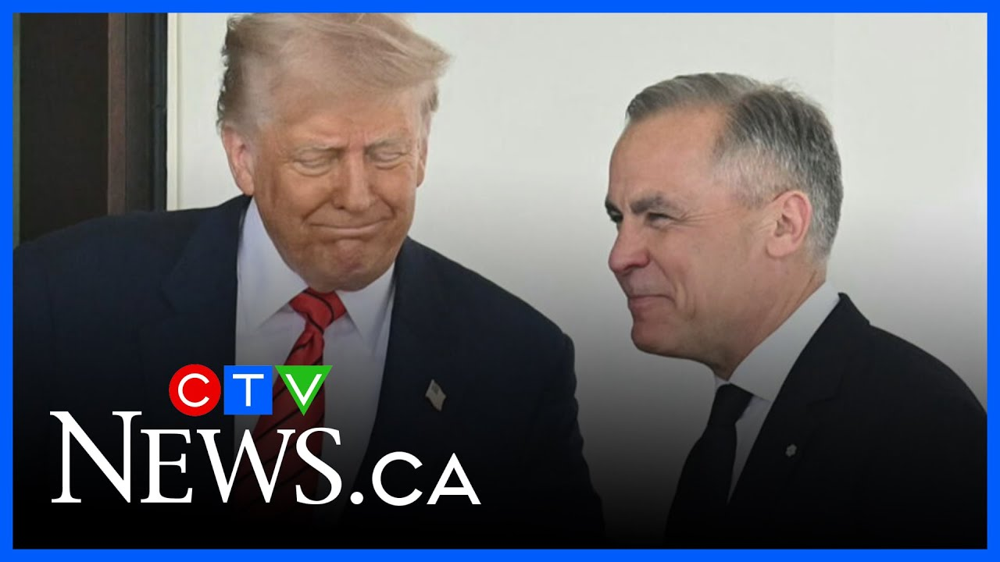

来B站一起耍【Global每日英语简报】
【卡尼与特朗普首次面对面会晤】
Summary: The Canadian prime minister met with President Trump to discuss trade and sovereignty, pushing back against the idea of Canada joining the US, while Trump maintained tariffs and reiterated his stance.
摘要： 加拿大总理与特朗普总统会晤，讨论贸易和主权问题，反驳加拿大加入美国的提议，而特朗普坚持关税立场并重申其观点。

⏱️ Estimated Reading Time: 5 min
Hello and thank you for joining us.
大家好，感谢您的收看。
The prime minister took his message of Canadian sovereignty to Washington today amid a trade war with our country's biggest ally.
总理今天在华盛顿传达了加拿大主权的主张，而此时我国正与最大盟友进行贸易战。
In the first face-to-face meeting between Mark Carney and President Donald Trump, the leaders spoke about the economy and national security.
在马克·卡尼与唐纳德·特朗普总统的首次面对面会晤中，两位领导人讨论了经济和国家安全问题。
And the prime minister pushed back against Trump's pitch for Canada to become the 51st state.
总理反驳了特朗普关于加拿大成为第51个州的提议。
Jordan Canigan has more.
乔丹·卡尼根将带来更多报道。
The high-stake sitdown between the two leaders kicking off with a handshake and fist pumps.
两位领导人的高风险会晤以握手和碰拳开始。
Mark Carney and Donald Trump meeting for the first time since Canada's election.
马克·卡尼与唐纳德·特朗普自加拿大选举后首次会面。
We were watching it with interest and I think uh Canada chose a very talented person, a very good person.
我们对此很感兴趣，我认为加拿大选了一位非常有才华、非常优秀的人。
Thank you for your hospitality and and above all for for your leadership.
感谢您的热情款待，尤其是您的领导力。
You're a you're a transformational president.
您是一位变革性的总统。
The friendly tone continued even as the president made another case for Canada to join the US.
尽管总统再次提出加拿大加入美国的理由，友好的氛围仍在继续。
Somebody drew that line many years ago with like a ruler, just a straight line right across the top of the country.
多年前有人用尺子画了那条线，笔直地横贯国家顶部。
I do feel it's much better for Canada.
我认为这对加拿大更好。
The prime minister standing firm, having met with the owners of Canada over the course of the campaign uh last several months.
总理立场坚定，他在过去几个月的竞选活动中会见了加拿大的所有者们。
Uh it it it's not for sale, won't be for sale uh ever.
它不会出售，永远不会出售。
But the president continued, "Never say never."
但总统接着说：“永远别说永不。”
And Trump didn't budge on any auto, steel, and aluminum tariff breaks, saying the US doesn't need anything from Canada, including Canadian energy.
特朗普在汽车、钢铁和铝关税减免上毫不让步，称美国不需要加拿大的任何东西，包括加拿大能源。
One out of every five barrels of oil uh comes from Canada.
每五桶石油中就有一桶来自加拿大。
The natural gas that goes into the LG plants where it's upgraded and you know uh have this value added and is sold to markets around the world.
输送到LG工厂的天然气经过升级加工，增值后销往全球市场。
Much of that comes from Canada.
其中大部分来自加拿大。
So factually I think the president is incorrect.
因此，我认为总统的说法在事实上是错误的。
But the prime minister says progress was made and this is the start of a long and complex negotiation.
但总理表示取得了进展，这是一场漫长而复杂谈判的开始。
Today marked the end of the beginning of a process of the United States and Canada redefining that relationship of working together.
今天标志着美加重新定义合作关系的开端结束。
The question is how we will cooperate in the future.
问题在于我们未来将如何合作。
And Jordan joins us now with more.
乔丹现在将为我们带来更多内容。
Jordan.
乔丹。
Trump's own staff called the meeting encouraging and interesting.
特朗普的团队称这次会晤令人鼓舞且有趣。
And Tara, make of that characterization what you will because neither administration is really saying much about what happened behind closed doors.
塔拉，你可以自行解读这一描述，因为双方政府都没有透露闭门会议的具体内容。
Though the American officials do say that that friendly tone we saw publicly did continue in the private meetings and the lunch between the two leaders.
不过美国官员确实表示，我们在公开场合看到的友好氛围在私下会议和两位领导人的午餐中得以延续。
Now, the prime minister says that he asked the president to stop referring to Canada as the 51st state, though he didn't say what Donald Trump's response to that ask was.
总理表示，他要求总统不要再称加拿大为第51个州，但他没有透露特朗普对此的回应。
Now, these two will be meeting again in person next month right here in Alberta as the prime minister confirming the president plans to attend the G7 summit in Canonascis.
两人下个月将在阿尔伯塔再次会面，总理确认总统计划参加卡诺纳斯基斯的G7峰会。
Now, neither the uh American administration has not confirmed that, though we should point that out.
不过美国行政当局尚未确认这一点，尽管我们应该指出这一点。
But that meeting is set to happen here on June 15th to 17th.
但这次会议定于6月15日至17日在这里举行。
Tara.
塔拉。
Okay, Jordan. Thank you.
好的，乔丹。谢谢。